PRANAV ROY
"Code. Data. Create. — BBACA Graduate | Pune, India"
Who Am I?
BBACA Graduate & Computer Applications Specialist based in Pune, India
Pranav Roy
Software Engineer & Data Analyst
ARIA NLP Chatbot, TITAN YOLOv8 Tracker
Power BI, DAX, SQL Window Functions, ARIMA
Python, JS, Java, C/C++, HTML/CSS
Vanilla JS, HTML/CSS, WebSockets, Firebase, REST APIs
Available immediately to join for Entry-Level roles
What I Bring to the Table
Programming Languages
Data & AI Stack
Development Tools
Selected Work
Data Analytics · AI · Software Engineering · Web
Zepto vs Blinkit
War Room
Multi-Source Competitive Analytics Dashboard
7-zone dark-theme Power BI dashboard comparing Zepto & Blinkit across delivery speed, pricing, sentiment and market share. Built with ARIMA demand forecasting and a multi-source SQL + Python data pipeline.
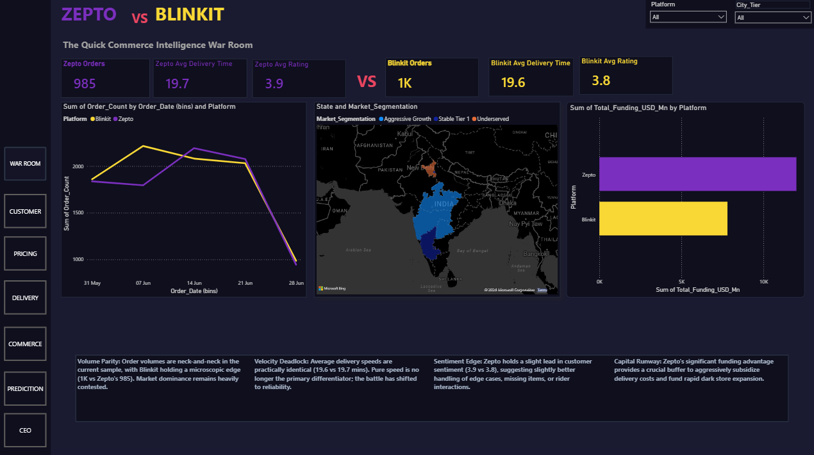
Pan-India Cinema
Intelligence
Power BI · 141 Films · 6 Industries · 2012–2025
5-page interactive Power BI report covering Box Office, Star Power, OTT performance and Pan-India cross-industry metrics. Tollywood leads with 41% of worldwide collections. Advanced DAX: Hit Rate %, ROI %, Avg OTT Window.
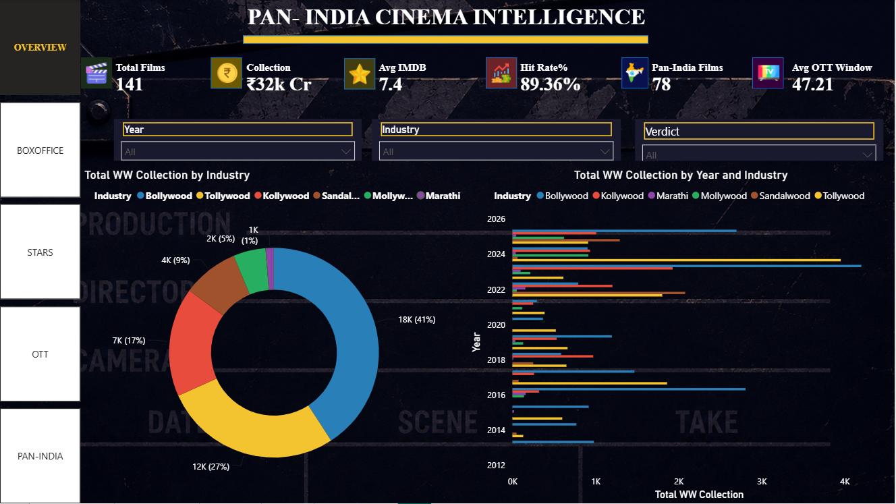
CodeAlpha AI
Internship Builds
ARIA · Language Translator · TITAN — Three Production AI Systems
ARIA: TF-IDF + Claude API NLP FAQ chatbot with fuzzy intent matching. TITAN: YOLOv8 + ByteTrack real-time object detection with cinematic OpenCV HUD overlay. Language Translator: 20+ language pairs via Tkinter GUI.
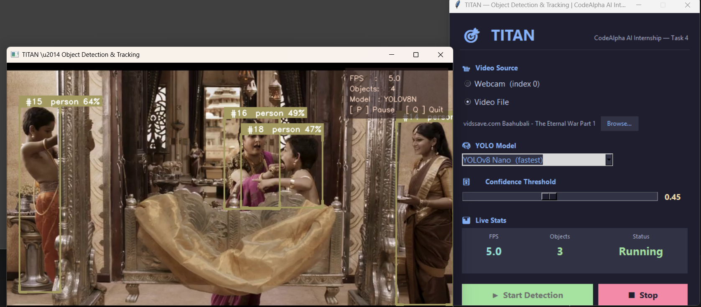
Script2Cinema
Filmmaker Collaboration Platform — Indian Film Industry Networking
Role-based networking platform for Indian filmmakers. Director, Writer, Cinematographer, Producer, with real-time project collaboration feed. Firebase-powered auth, storage, and real-time database. Fully responsive, dependency-free frontend.
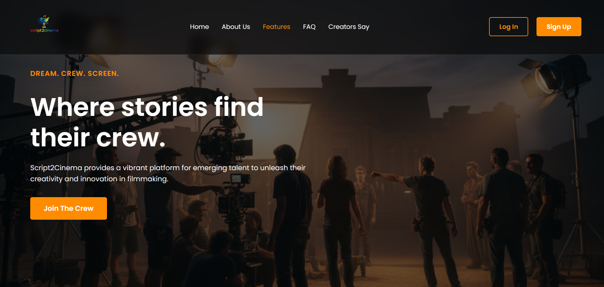
Job Intelligence
Engine
Live Job Scraper · Skill-Fit Scorer · Terminal Dashboard — Powered by Python
Scrapes live job listings from RemoteOK and Adzuna APIs, scores each against your skill profile, and renders a Rich terminal dashboard with Top-10 fit scores, application status tracking, and daily scheduling via APScheduler. Found 62 new listings, 20 today — all from Pune.
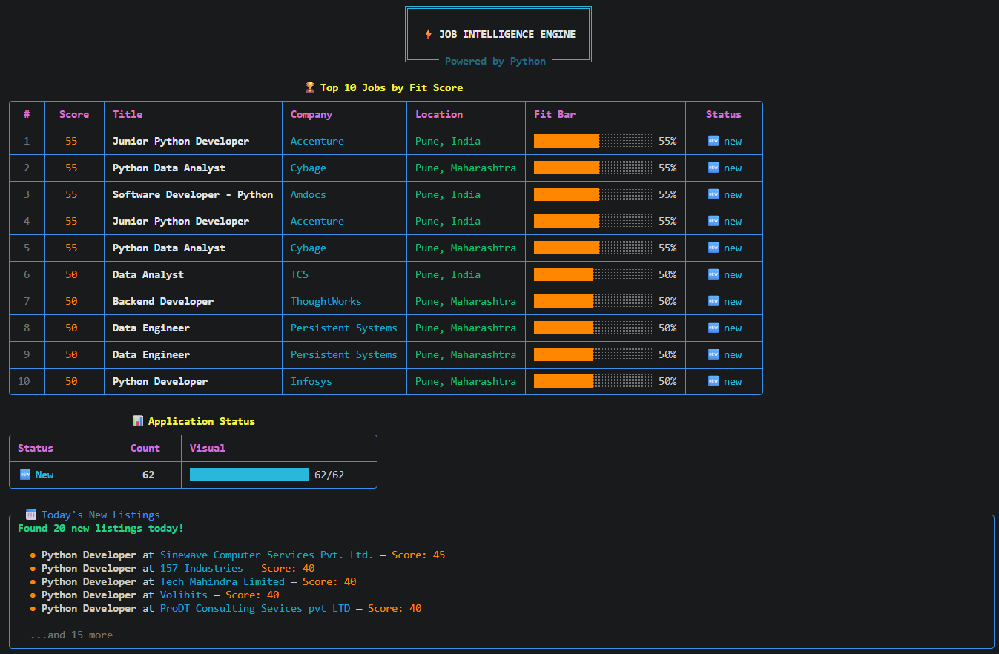
CodeAlpha Data
Analytics Internship
Web Scraping · EDA · NLP Sentiment Analysis — IMDB 50K Reviews
Four internship deliverables: BeautifulSoup web scraping from books.toscrape.com, Pandas EDA with missing-value treatment and correlation matrices, and NLP sentiment classification on 50K IMDB reviews using TextBlob polarity — 75.9% Positive · 24.1% Negative · 0.1% Neutral.
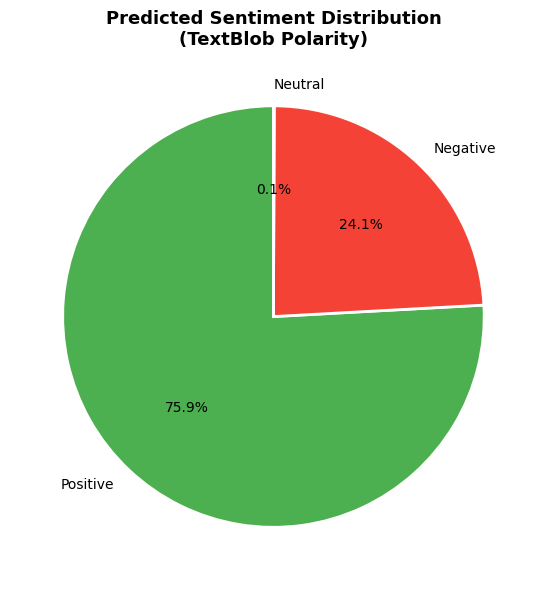
IPL Match
Performance Analyzer
260,920 Ball-by-Ball Deliveries — PostgreSQL + Python Pipeline
End-to-end SQL + Python analysis of every IPL delivery ever bowled. Team win counts, top run scorers, average run rates per over, and head-to-head win-count heatmaps across all seasons. Visualized with Seaborn and Matplotlib.
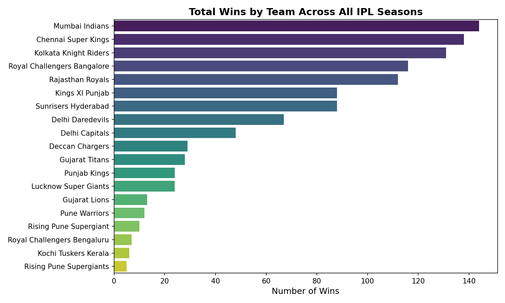
Global Data Science
Job Market Analysis
PostgreSQL · Pure SQL · CTEs · Window Functions — 3,925 Listings
Advanced SQL analysis of the global data science job market. Salary trends by country, experience level, and role. Remote vs on-site demand with year-over-year shifts. Top-10 in-demand skills ranked by posting frequency using RANK() and DENSE_RANK().
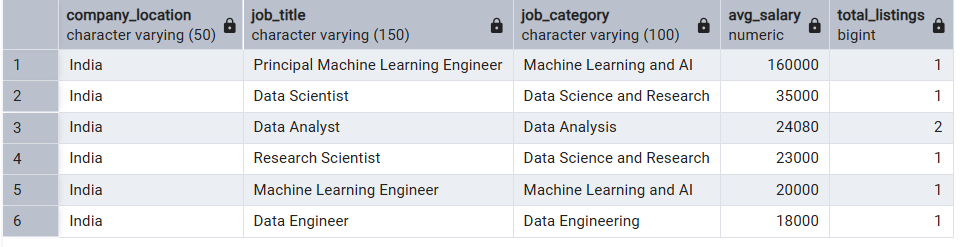
IBM HR Employee
Attrition Dashboard
Excel · Pivot Tables · Linked Slicers · 1,470 Records
Interactive Excel dashboard surfacing attrition drivers across department, age band, overtime, tenure, and salary gap. KPI cards for Attrition Rate, Average Tenure, and Salary Gap — all linked with cross-filtering slicers.
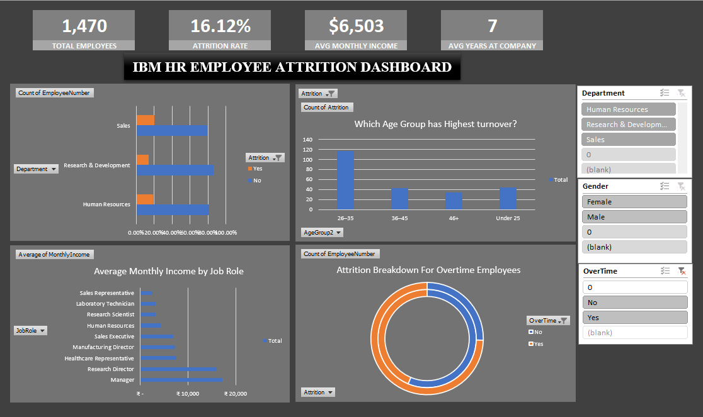
Bank Customer Churn
& Retention Analytics
Python · Power BI · Logistic Regression · Streamlit — 10,000 Customer Records
End-to-end churn prediction pipeline: EDA, hypothesis testing, logistic regression (80.7% accuracy), Power BI dashboard, and a live Streamlit app where you select any Customer ID and instantly see their churn probability, risk band, and top 2 retention drivers. Overall churn rate: 20.37%. Inactive single-product customers churn at 36.65% — 1.80× the average.
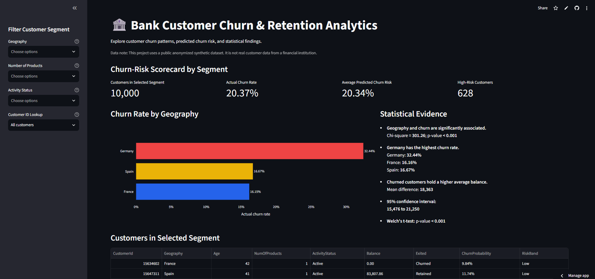
Growth Experimentation
& Retention Analytics
A/B Testing · Funnel Analysis · Cohort Retention · Streamlit — 120,000 Sessions
Full growth analytics suite: A/B test (ad vs PSA), 4-stage funnel (Page View → Cart → Checkout → Purchase), and cohort retention by acquisition source. Ad treatment lifted conversion from 1.79% to 2.55% (+43% relative lift, p < 0.001) — but the entire confidence interval sits below the 2pp MDE, so the recommendation is: do not fully roll out yet. Live Streamlit app with interactive filters.
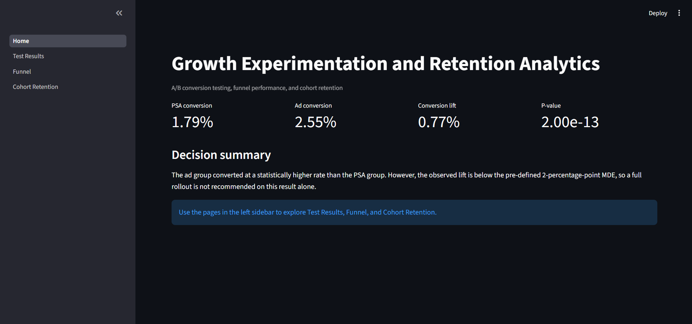
Vanilla JS
Quiz Engine
Zero Dependencies · Closures · Execution Contexts · Safe DOM Rendering
A dependency-free quiz app built to demonstrate JavaScript internals — execution contexts, hoisting, TDZ, closures, and the event loop. Features a live countdown timer (13s per question), Score tracker, Best score persistence, and XSS-safe DOM rendering with no innerHTML.
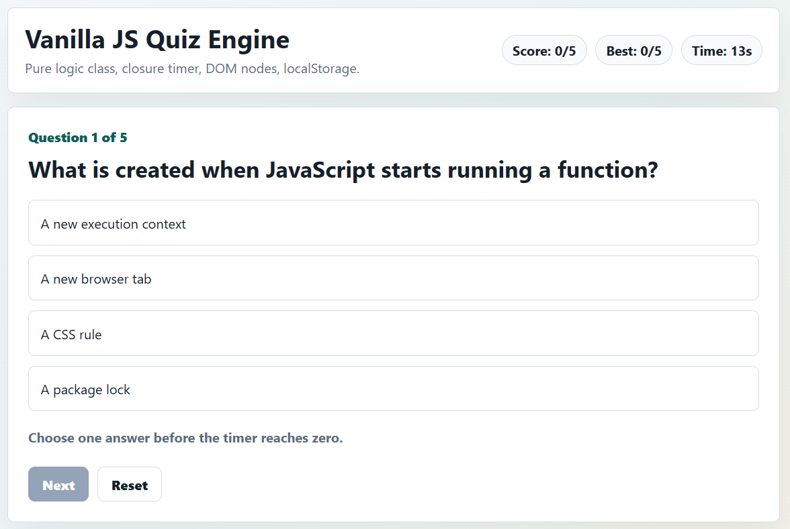
Pan-India Cinema
Dashboard Site
Vanilla JS · Promise.allSettled · Hand-rolled Debounce · 6 Industries
Dependency-free web dashboard that concurrently fetches movie data for Bollywood, Tollywood, Kollywood, Sandalwood, Mollywood, and Marathi industries using Promise.allSettled. Search across all 141 films instantly with a hand-rolled debounce and memoised fetch cache. Shows avg IMDB rating and box office by genre per industry.
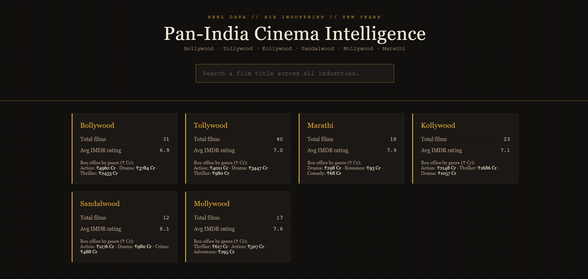
Realtime Collaborative
Note Board
Raw WebSockets · Optimistic UI · Version-Based Conflict Resolution
Multi-user sticky-note board where every connected user sees changes instantly. No Socket.io — raw WebSocket protocol only. Drag-and-drop positioning syncs across all tabs. Optimistic UI updates locally first, reconciles on server confirmation. Exponential-backoff auto-reconnect. Shown: 3 users online simultaneously sharing 3 sticky notes live.
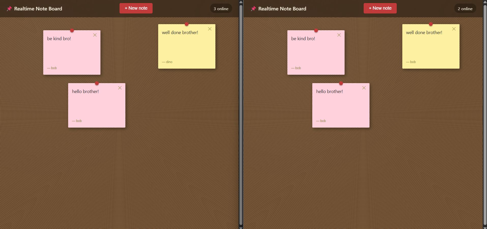
freeCodeCamp
Data Analysis
Full Certification · 5 Projects · NumPy · Pandas · Matplotlib · SciPy
Five certification projects spanning the full Python data analysis stack: Demographic Data Analyzer (census groupby filtering) · Medical Data Visualizer (seaborn heatmap + catplot) · Sea Level Predictor (linregress dual-period extrapolation) · Page View Time Series (datetime resampling) · Statistical Calculator (mean, variance, std, percentile).
Systems & Algorithm Engineering
Low-Level Memory Management, Object-Oriented Architecture & Data Structures
Library Management System
17/17 JUnit 5 tests passing · Clean Architecture with GoF Design Patterns (Factory, Strategy, Singleton)
DSA Tracker
30 Java DSA problems solved with brute force & optimal approaches + comprehensive JUnit 5 test suite
Dynamic Array in C
malloc/realloc growth, memmove deletion, Valgrind-verified zero memory leaks and raw pointer management
Doubly LinkedList & BST
Pointer-to-pointer mutation, in-order successor deletion, tree balancing & zero memory leak verification
Python Algorithm Library
25 DSA algorithms with type hints, Google docstrings, modular architecture & unit test suite via Pytest
Banking System CPP
Inheritance, virtual functions, RAII unique_ptr memory safety, Rule of Five enforcement & Valgrind clean
All GitHub Repositories
21 public repositories · github.com/PranavRoy07
Certifications & Learning
Verified credentials from industry-recognized platforms
Data Analysis with Python
Completed 5 verified projects: Demographic Data Analyzer, Medical Data Visualizer, Sea Level Predictor, Time Series Analyzer, and Statistical Calculator.
Full SQL Queries & Data Science
SQL fundamentals and advanced database queries — Inner/Outer Joins, subqueries, Window Functions, CTEs, GROUP BY aggregations, and data modeling.
Career Essentials in Generative AI
Generative AI architecture principles, Large Language Model (LLM) workflows, prompt engineering, AI ethics, and Microsoft Copilot integration.
Full MS Excel for Data Analysis
Advanced Excel formulas (VLOOKUP, XLOOKUP, INDEX/MATCH), Pivot Tables & Charts, Data Validation, Linked Slicers, and Executive Dashboards.
Tata iQ, Deloitte & AWS Simulations
Simulated industry deliverables with Tata iQ (data storytelling), Deloitte (forensic tech & data classification), and AWS (cloud EC2, S3, IAM, architecture).
Data Analytics & AI Internship Certificates
Dual-track internship completion certificates covering Data Analytics (web scraping, EDA, NLP) and AI (ARIA chatbot, TITAN object detection, Translator).
Internships
Hands-on professional experience
Academic Background
🎓 BBACA — Bachelor of Business Administration in Computer Applications
Modern College of Arts, Science and Commerce, Pune
Business Administration + Computer Science hybrid curriculum combining core engineering principles with business domain knowledge.
Self-Driven Learning & Platforms
freeCodeCamp
Data Analysis with Python — Full Certification & 5 Verified Projects
Simplilearn
Full SQL Queries & Data Science — Joins, Subqueries, Window Functions & CTEs
LinkedIn Learning & Microsoft
Career Essentials in Generative AI — LLMs, Prompt Engineering & Copilot
Simplilearn
Full MS Excel for Data Analysis — Advanced Formulas, Pivot Tables & Dashboards